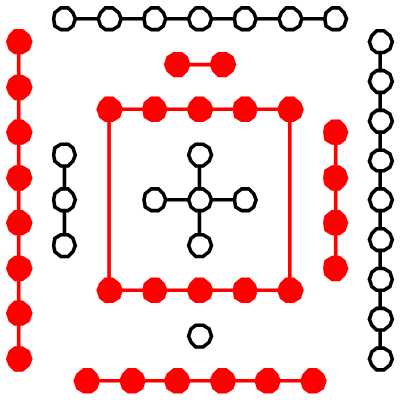
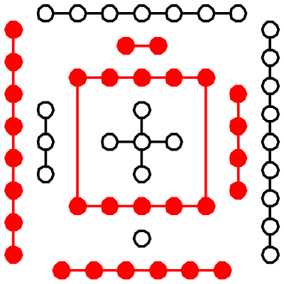
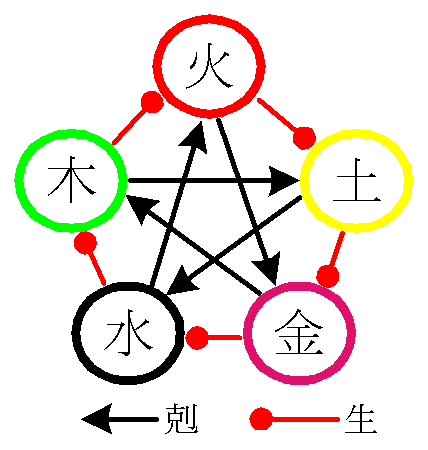
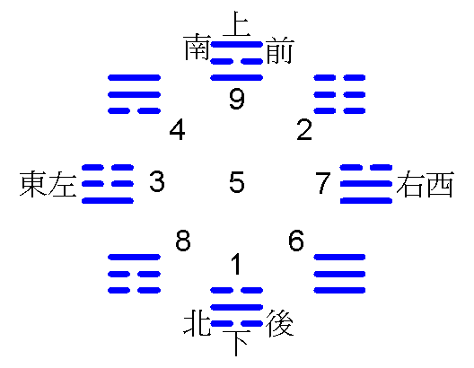
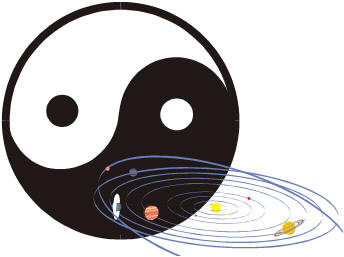
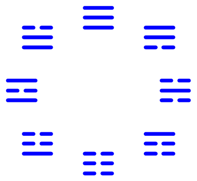
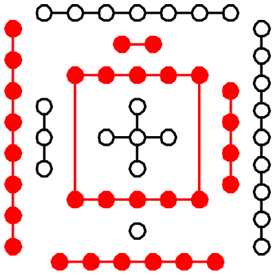
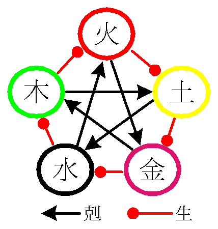
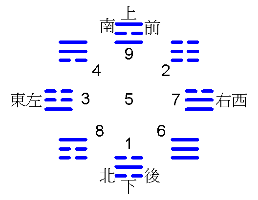

Acquired
River
chart
Acquired
River
chart  Luo
river book
Luo
river bookFive lines Imperial palace
The foods with Chinese medicines mixed in cure the side the mechanism - Chinese medicine academic angle
1AUHC6wpgF676cEd8uZX6cU8BucGU4KAP7
The Book of Changes is the higher level civilization, the Chinese medicine henceforth grows. Simultaneously this also is the Chinese medicine principle or the principle according to, also is the universe can application method.
Primal
chaos Congenital
Acquired
River
chart Luo
river book
Five lines
Imperial
palace
This is the Chinese medicine specialized academic angle says, is not the doctor practicing western medicine angle, also is not the scientific angle. Understands no problem, because very many people also understand (or use the appreciation the point of view impression, is the book from heaven after all. Only may get an idea cannot explain, wonderful, appropriately has manifested this ideal condition). Including does not pretend to like what one really fears. The Chinese medicine is not does not have the truth, only is modern people's wisdom many understands this truth with difficulty.
Human's life 4 on ten thousandth, but 30 on ten thousandth (Peng ancestor), universe vast, the life is tiny, if does not have the history, has not inherited, many things are not we can know. This is the China traditional culture valuable place, also it may be said the national treasure (but is not people hangs nearby mouth these visible valuable thing).